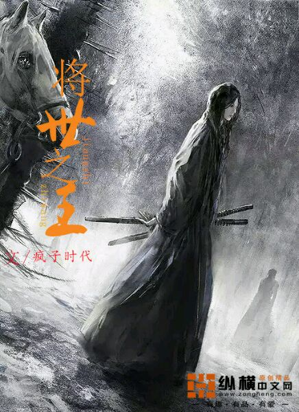
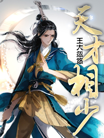

返回
首页
分类
排行
全本
阅读记录
书架
玄幻小说
幻想圣王
作者：晨曦之心博
更新至：
第十四章:盛行佣兵团
简介：
神秘少年的异界之旅，异界大陆智斗群雄。来自异界穿越者将会在异界掀起怎样的一股风浪。 各位书友要是觉得《幻想圣王》还不错的话请不要忘记向您QQ群和微博里的朋友推荐哦！

将世之王
作者：疯子时代
更新至：
第十七章 摧枯拉朽
简介：
天下百辟奉我为尊宇宙星辰我影所承凌地冰魂因我而存万古君座将世之王(等级制度：将意-将体-将师-将灵-将宗-将君-将王-将皇-将帝-？？每个等级分为黄玄地天四个小阶级）——————————————————新人写书，求各位朋友们多多… 各位书友要是觉得《将世之王》还不错的话请不要忘记向您QQ群和微博里的朋友推荐哦！
我若为星辰
作者：炼血
更新至：
第二十四章 人生?
简介：
在这里，芸芸众生中，每个人都渴望强大，渴望逆转岁月，渴望那永恒生命。所以，修仙应运而生，仙能让人强大，仙能永恒生命，。所以，这里的人不礼佛，不拜神，只修仙！戮神，弑仙，屠妖，杀魔。人若要我死，我必屠尸百万！仙若要杀我，我必弑仙无数！天若要亡我，我必焚灭诸天！██████████████████████████████████求推荐，求收藏，求点击！徐浩在此感谢诸位道友！ 各位书友要是觉得《我若为星辰》还不错的话请不要忘记向您QQ群和微博里的朋友推荐哦！
灵武弑九天
作者：平凡魔术师
更新至：
新书《九星霸体诀》上传
简介：
叶扬穿越异世，得九天玄剑认主，习神秘功法《戮神诀》，走上一条靠杀戮修行之路,逐渐揭开九天玄剑陨落之谜，杀上神界，血染九天。 家族中，面对家族弟子的排挤，他如何崭露头角？ 学院里，面对无数天才的压迫，他如何崛起争锋？ 帝国内，面对残忍嗜血的敌人，他又如何迎战？ 如何解开自己的身世之谜？如何守护身边如花似玉的美女？一切尽在——灵武弑九天。 各位书友要是觉得《灵武弑九天》还不错的话请不要忘记向您QQ群和微博里的朋友推荐哦！
人邪纪元
作者：半月了一team
更新至：
第三十四章 再回校园
简介：
神的眷顾者风邪，在末世之后的人类世界里，一步一步的成为拯救人类的英雄！ 各位书友要是觉得《人邪纪元》还不错的话请不要忘记向您QQ群和微博里的朋友推荐哦！
共和纪
作者：巫炎凉
更新至：
第十三章 慢慢加速而不自觉的生活
简介：
这是太一的世界，是传说的神弃之地。五族共存在这天地之间，然仰望苍穹已无敬畏，只有弱肉强食——强者为主弱者为奴的规则，众生哀鸣。一个普通的跛脚少年与一个长着胎记的少女在生存中挣扎着，在风云际会中逆旅而行，劈开一条自由与尊严同在的生命之路。他说不上是英雄，当… 各位书友要是觉得《共和纪》还不错的话请不要忘记向您QQ群和微博里的朋友推荐哦！
墟冥幻歌一均衡
作者：择尔根的爱
更新至：
30.逆转,雨落狂流之变
简介：
均衡存乎万物之间，日出日落潮生潮退是一种均衡，血液流动周期循环是一种均衡，将生命、肉体、乃至灵魂放上等价的天平交换力量更是一种均衡！孤独半生的少年和天赋卓著地位崇高的未婚妻，上古幻神创下的法则有均衡使徒代代传承，成功者踏上世界的王座，失败者就此人间失格。一心平淡的少年被世界嘲弄，无须顾虑太多，握紧了剑柄，我们便是命运！一无所有的人们，所向无敌！！ 各位书友要是觉得《墟冥幻歌一均衡》还不错的话请不要忘记向您QQ群和微博里的朋友推荐哦！
三次重生：救世主
作者：紫魅
更新至：
重生现代
简介：
这一世她被折磨得自尽，因为使命，她重生到21世纪，因男友的背叛，出了车祸，回到古代实行她的复仇记。 各位书友要是觉得《三次重生：救世主》还不错的话请不要忘记向您QQ群和微博里的朋友推荐哦！
斗罗大陆II绝世唐门
作者：唐家三少
更新至：
第六百二十二章 大结局
简介：
这里没有魔法，没有斗气，没有武术，却有武魂。唐门创立万年之后的斗罗大陆上，唐门式微。一代天骄横空出世，新一代史莱克七怪能否重振唐门，谱写一曲绝世唐门之歌？百万年魂兽，手握日月摘星辰的死灵圣法神，导致唐门衰落的全新魂导器体系。一切的神奇都将一一展现。唐门暗器能否重振雄风，唐门能否重现辉煌，一切尽在绝世唐门！【斗罗大陆II，我想，有这几个字就足够了吧。归来吧，唐门的兄弟姐妹】v群群号：100489824（加群需要全订阅或粉丝值三千）唐门力堂：111753668唐门敏堂：79044526（入群需有起点账号） 各位书友要是觉得《斗罗大陆II绝世唐门》还不错的话请不要忘记向您QQ群和微博里的朋友推荐哦！
金武大陆
作者：飞跃天空
更新至：
第三十四章:暴走 下
简介：
魔幻的金武大陆，意想不到的结果。魔幻金武，炫酷道具，系统全开，称霸天下。天下独一无二的一个绝世系统，圣者逆袭，大逆转！！！这就是不同寻常的命运。 各位书友要是觉得《金武大陆》还不错的话请不要忘记向您QQ群和微博里的朋友推荐哦！
EXO之轮回
作者：鹿Vcinne
更新至：
羽姗·鹿晗/安紫潇落水
简介：
一场看似不满的政治婚姻却让他和她结下了不解之缘。 各位书友要是觉得《EXO之轮回》还不错的话请不要忘记向您QQ群和微博里的朋友推荐哦！
屌丝的成神之路
作者：荆轲由命
更新至：
第十五章 暴力狂?
简介：
你见过屌丝逆袭高富帅，见过屌丝成神么？ 各位书友要是觉得《屌丝的成神之路》还不错的话请不要忘记向您QQ群和微博里的朋友推荐哦！
摆弄苍穹
作者：偶才十几岁
更新至：
第十五章 洞口
简介：
本书精彩，各位看客不要走开，精彩在第七章之后一间闺房内，女子独有的清香渐渐散开。楼下的三言俩语中频频出现俩个陌生地字眼，慵懒的眸子在此刻也是微放着异彩，躺在榻上的女子也是缓缓坐立了起来。小手伸出，镶着黑金丝的紫袖滑落，露出一截雪白如藕的皓腕… 各位书友要是觉得《摆弄苍穹》还不错的话请不要忘记向您QQ群和微博里的朋友推荐哦！
雷尊剑帝
作者：再战江湖
更新至：
第十三章 外门长老
简介：
一场天地浩劫，战长风被九天神雷兽所累，穿越到了修炼大世界，一柄九天剑灵也无可奈何地钻进他的识海。“卑微的存在，你亵渎了神灵，你死定了。”面对着小兽和小剑嚣张的样子，战长风抬起脚，“什么雷尊剑帝，统统给我闭嘴！”“你大爷……”战长风的脚下，一兽一剑在哀嚎，战长风满脸的奸笑道：“我大爷早死了。” 各位书友要是觉得《雷尊剑帝》还不错的话请不要忘记向您QQ群和微博里的朋友推荐哦！
九世孽缘我爱妖妖
作者：我非即墨
更新至：
无空沦陷
简介：
少年‘妖妖，我们会一直不分离的吧。’妖妖‘少年，这不像你啊！’少年‘我永远不会背叛你。’妖妖‘少年，这不像你啊！’少年‘爱你。’妖妖‘我也是。’ 各位书友要是觉得《九世孽缘我爱妖妖》还不错的话请不要忘记向您QQ群和微博里的朋友推荐哦！
惊世神族
作者：幻天绝笔
更新至：
第五章 神殿神树神石,铭凌参考半期。
简介：
简介：古唐神族传人谢铭凌意外诞生现代世界，千年古唐世人开始穿越寻找。经一番努力将少主带回千年古唐，谢铭凌回到家族经历千古磨练：学武，历练，寻仙，弑兽，神练，归族，血战和一统家族等事件。 各位书友要是觉得《惊世神族》还不错的话请不要忘记向您QQ群和微博里的朋友推荐哦！

天才相少
作者：王大忽悠
更新至：
第一九零七章：君临天下（大结局）
简介：
【百万字精品】风水奇术，穿越现代！！一代相门天才，闯荡都市修真！！出神入化的风水相术，精彩纷呈的都市故事！！ 各位书友要是觉得《天才相少》还不错的话请不要忘记向您QQ群和微博里的朋友推荐哦！
洪荒之道长
作者：黑夜传奇
更新至：
第一百五十章 大鹏
简介：
夏衍是个假道长，道长来到洪荒开开心心过日子。你有别墅豪宅，夏衍告诉你你弱爆了，咱的地盘重来都是用“界”算的，随随便便就是一个小千世界。什么你有豪车保镖。咱从来不开车，咱坐的是无污染全天然快捷环保的的的的的小白云牌小白云一朵啊。嘿嘿道长很忙的哦，忙啥。你猜… 各位书友要是觉得《洪荒之道长》还不错的话请不要忘记向您QQ群和微博里的朋友推荐哦！
创灵巅峰
作者：旧城忆人
更新至：
第七章 焚炎灭生掌
简介：
一个充满灵力的下位面，一个小小少年，获机遇，流离在外，四处闯荡。手握流离棍，拥有阴暗之气，用邪恶之力建设和平半位面，看小子楚子航怎样成为灵力大陆最强者，如何成就最强的强者巅峰 各位书友要是觉得《创灵巅峰》还不错的话请不要忘记向您QQ群和微博里的朋友推荐哦！
殿下，等等我
作者：天涯很远
更新至：
第五章
简介：
高中生瞳苓，被带到了一个不知名的王国，女王告诉她，她的使命就是拯救这个王国。可是，，可是，，，她只是个学生啊，她才不要呢！但是看到帅气的殿下后，其实她还是可以勉强答应啦！！毕竟可以和帅帅的殿下一起上路嘛。但是，喂，，殿下，你等等人家啦，呜呜·~你走太快了啦 各位书友要是觉得《殿下，等等我》还不错的话请不要忘记向您QQ群和微博里的朋友推荐哦！
首页
上页
尾页
输入页数
(第10/10页)当前20条/页